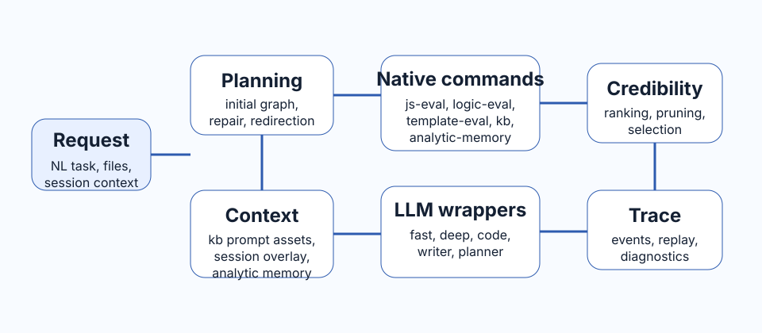

Planning and control
DS002, DS003, DS006, and DS016 define graph compilation, topological execution, request entry, plan bootstrapping, epochs, and bounded repair behavior.
Implemented runtime
MRP-VM v0 is now implemented as a bounded execution machine with explicit planning, explicit state, explicit knowledge injection, and independent credibility assessment.
MRP-VM v0 is specified as a runtime for local interpretive regimes rather than as a monolithic prompt wrapper. Tasks enter as natural language requests plus bounded context, then become a graph of SOP Lang declarations. Execution is mediated through native commands, external interpreters, family-based state, and auditable trace records.
The runtime-facing DS set lives in DS002 through DS023. These files define the implementation contract, and the repository now includes the corresponding runtime source tree, server adapter, declaration-style default KUs, and tests.

DS002, DS003, DS006, and DS016 define graph compilation, topological execution, request entry, plan bootstrapping, epochs, and bounded repair behavior.
DS002 defines families, variants, representative resolution, and declaration insertion; DS007 through DS012 define native command contracts.
DS005, DS011, DS012, DS017, and DS019 define bounded context, declaration-style prompt assets, independent candidate comparison, normalized failure handling, and evaluation strategy.
DS018 and DS022 define the top-level server/ adapter, SDK entry points, native APIs, SSE trace streaming, API-key-backed authority, and the four-page operational UI covering a compact conversation-first Chat surface, a dedicated Traceability workspace, a KB Browser, and tab-structured Settings. The server refuses to run on the fake LLM adapter unless an explicit local/test override is enabled.
DS013 and DS023 define the Achilles-backed adapter boundary, `LLMAgent` usage, model tiers, task tags, and profile-specific routing for wrapper interpreters.
DS004 and DS021 are intentionally marked as proposal-only surfaces. They reserve architectural direction without being treated as immediate implementation baseline.
| Surface | Consolidated rule |
|---|---|
| Interpreter outputs | Commands return ordered lists of concrete variables plus metadata, not opaque result envelopes. |
| Knowledge retrieval | Ordinary kb retrieval is symbolic and deterministic; LLMs are reserved for induction and maintenance tasks. |
| Memory naming | analytic-memory is the canonical aggregation surface for v0. |
| Planning guidance | Planning prompt guidance must come from KU-managed prompt assets rather than from large hardcoded prompt bodies. |
| Server UI structure | Chat stays conversation-first with a compact session status bar and live Thinking... placeholder, while traceability, KB tuning, and tabbed settings remain on dedicated pages under server/ with templates and CSS stored outside JavaScript. |
The repository now contains the runtime tree under src/, the top-level server and operational UI adapter under server/, the declaration-style default-KU assets under data/default/, and a modular native test suite under tests/. The current hosting surface distinguishes session origin, auth mode, effective role, and API-key-backed authority while keeping the SDK boundary intact.